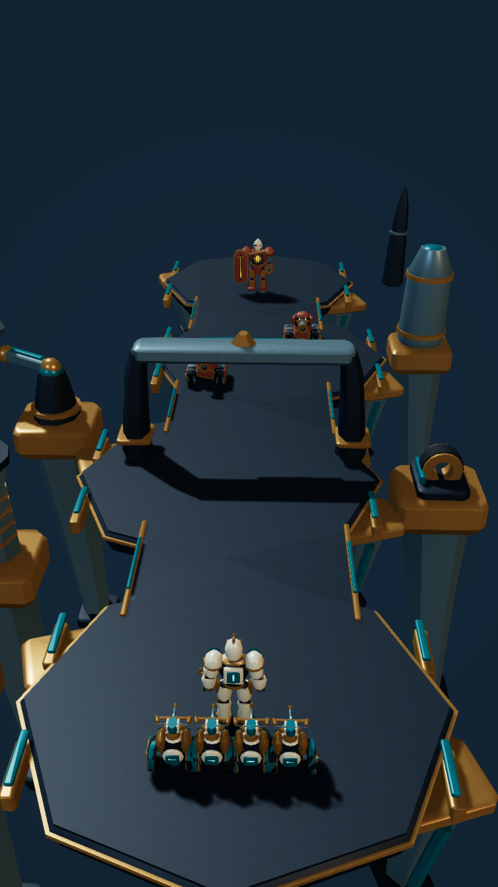
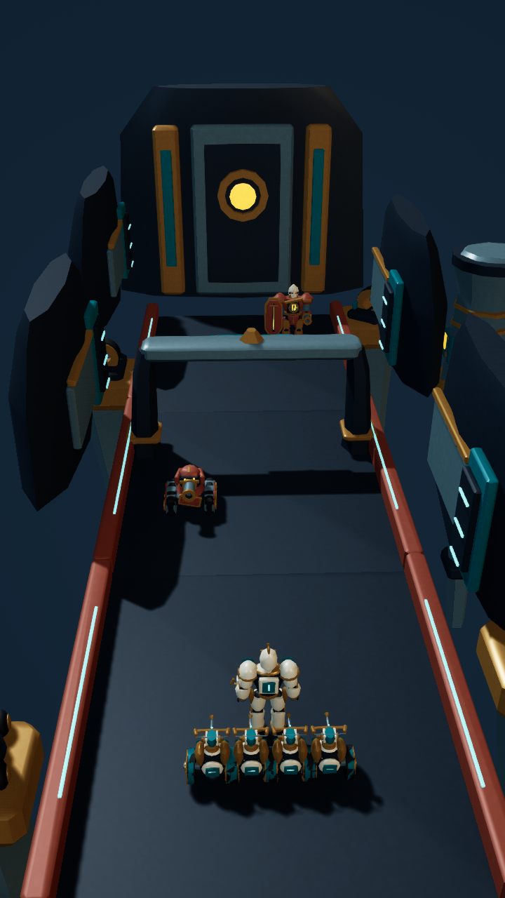
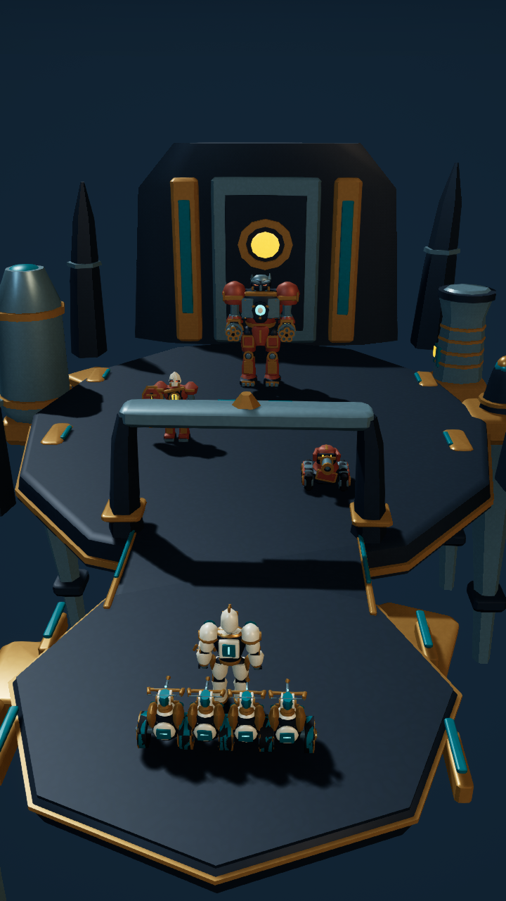
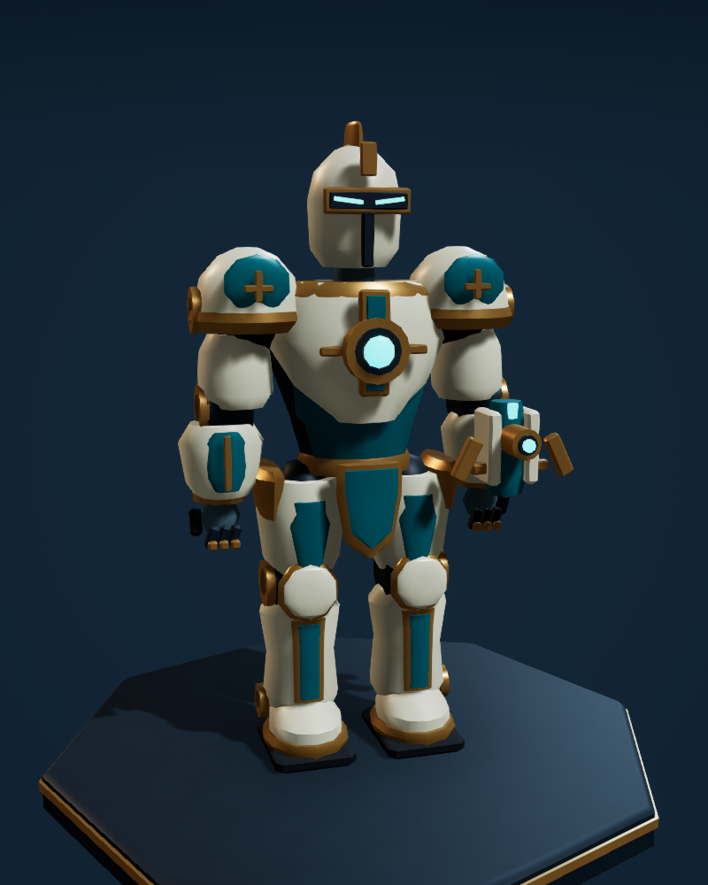
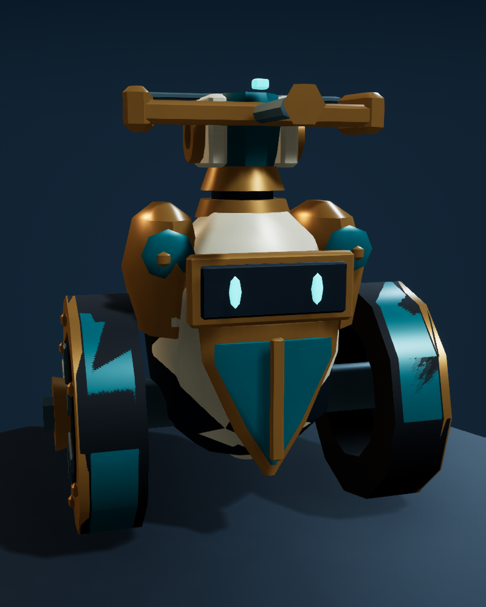
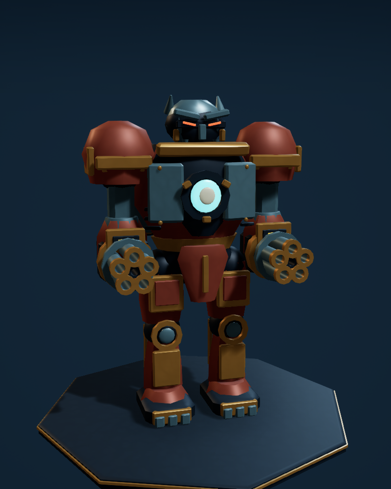

A new world.
A new legion.
Original mechanical characters, sculpted platforms and new portrait camera setups, built directly in Unreal Engine. Every image below is captured from the native scenes.
Art and level preview · The new scenes have mechanical animation loops. Combat, progression and Android packaging are still to be connected.
Three new environments

01 / Skyforge ViaductSuspended above the foundry
Broad islands, narrow connecting spans and offset support towers.

02 / Reactor TrenchThrough the reactor banks
A darker sunken route, illuminated conduits and a sealed reactor door.

03 / Core CitadelA platform for the Colossus
A narrow arrival opens into a broad arena framed by machinery.
The rebuilt characters

CommanderRelic Marshal
Ivory armor, an exposed reactor and an articulated forearm weapon.

Allied troopGearling Sentinel
Two working wheels and an independently moving crossbow turret.

BossForge Colossus
Separate cannons, boosters and limbs prepared for staged destruction.